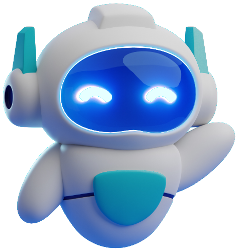
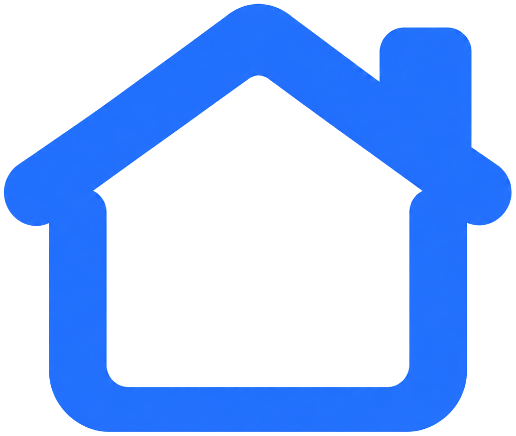

혼자 사는 집,
할 일은 한곳에
일정, 공과금, 쓰레기 배출까지.
자취생 생활에 필요한 것만 모아 ZIP이 챙겨 드려요.

일정 · 할 일✅
까먹지 않게
한눈에 보여줘요
오늘 할 일과 이번 주 일정을 홈 화면에서 바로 확인하고,
끝낸 일은 체크하면 끝!
공과금 · 월세💸
납부일 전에
먼저 알려줘요
월세일과 공과금 납부일을 한 번만 등록하면
매달 잊지 않게 알림이 오고, 이번 달 납부 현황도 보여요.
쓰레기 배출🗑️
버리는 날을
놓치지 않게
우리 동네 분리배출 요일을 알려 주고,
헷갈리는 쓰레기는 사진 한 장으로 물어볼 수 있어요.
AI 생활 도우미🤖
사진 한 장이면
척척 알려줘요
분리배출 방법, 냉장고 속 재료로 만드는 요리,
생활 꿀팁까지 물어보면 바로 대답해요.
이거 어떻게 버려요? 🍕
종이박스는 펼쳐서 재활용!
냉장고 재료로 요리 추천 🍳
동네 · 이야기📍
우리 동네
꿀팁까지
주변 세탁방과 편의점을 지도에서 찾고,
이웃들이 올린 자취 꿀팁도 구경해요.
이제
집으로 들어가요
로그인하면 내 일정, 할 일, 공과금을 이어서 볼 수 있어요.
